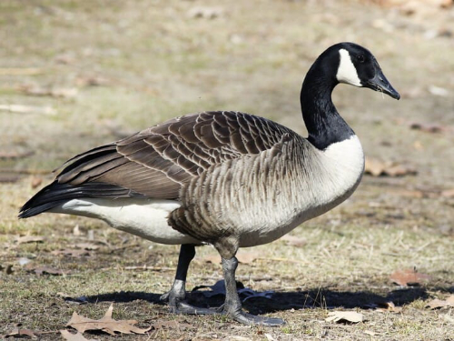
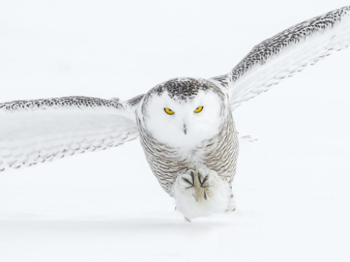
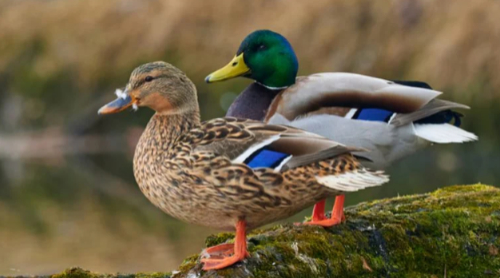

Here are 3 Fascinating Ontario Birds
Canada GooseThe Canada Goose (<em>Branta canadensis</em>) is a large wild bird, easily identified by its black head and neck, white chinstrap, and brown body. This species of goose has seven subspecies differing in size, location, and body colouring. The nominal subspecies in Ontario (and Canada) is the Atlantic Canadian Goose (<em>B. c. canadensis</em>). Fun Fact: Male and Female canadian geese are nearly identical, only differing by 0.2-1.0 kg depending on the subspecies. Fun Fact: Canadian geese were introduced as a game species to New Zealand in 1905. Since then, they have become somewhat of an invasive species. |
 |
|  |
Snowy OwlThe Snowy Owl (Bubo scandiacus) has many names and is a part of the larger true owl family. Other names for the snowy owl include Polar Owl, White Owl, and Arctic Owl. Male owls tend to be purer white while females tend to have more flecks of dark brown. Juveniles tend to resemble females until maturity, regardless of sex. Fun Fact: Most owls sleep during the day and hunt at night, but snowy owls follow the opposite schedule. Fun Fact: Snowy owls tend not to interbreed in the wild. There are no known wild hybrid species of snowy owl. |
MallardThe Mallard (Anas platyrhynchos) or wild duck are found throughout the temperate Americas. There is a large diveristy in appearance due to the genetic pollution from breeding with other species of duck. Females tend to have mainly brown-speckled plumage. Males tend to have a brown body and can have a green or blue head. Both sexes, males especially, have a white-bordered area of iridescent blue or purple feathers called a speculum on their wings. Fun Fact: This species is the ancestor of most species of domestic duck. The frequent interbreeding of this species leads to many fully fertile hybrids. Fun Fact: Genetic testing shows that the mallard is more closely related to its Indo-Pacific relatives than its American relative, the black duck, despite frequent interbreeding with its American relatives. |
 |